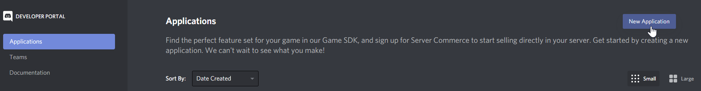
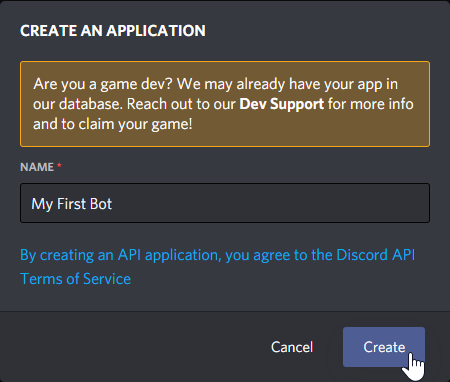
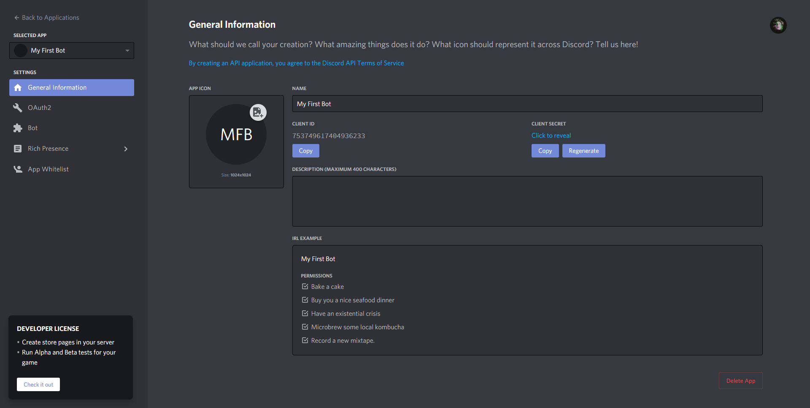
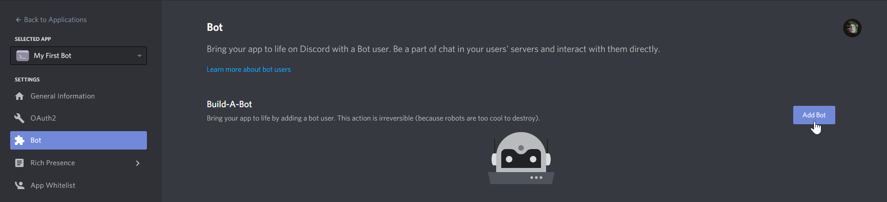
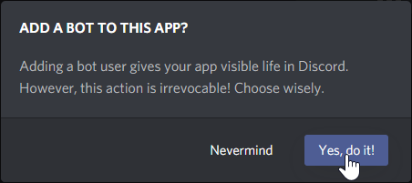
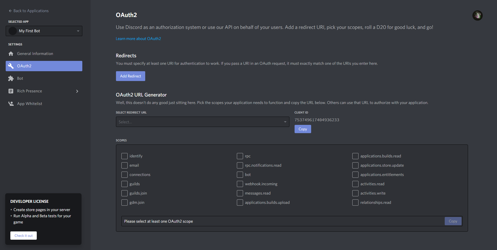
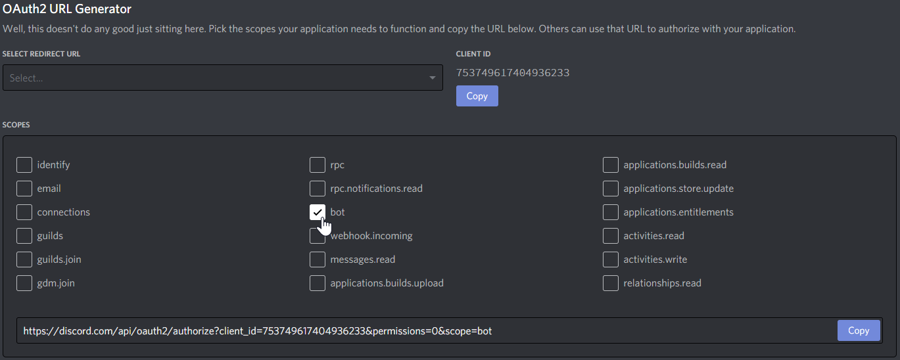
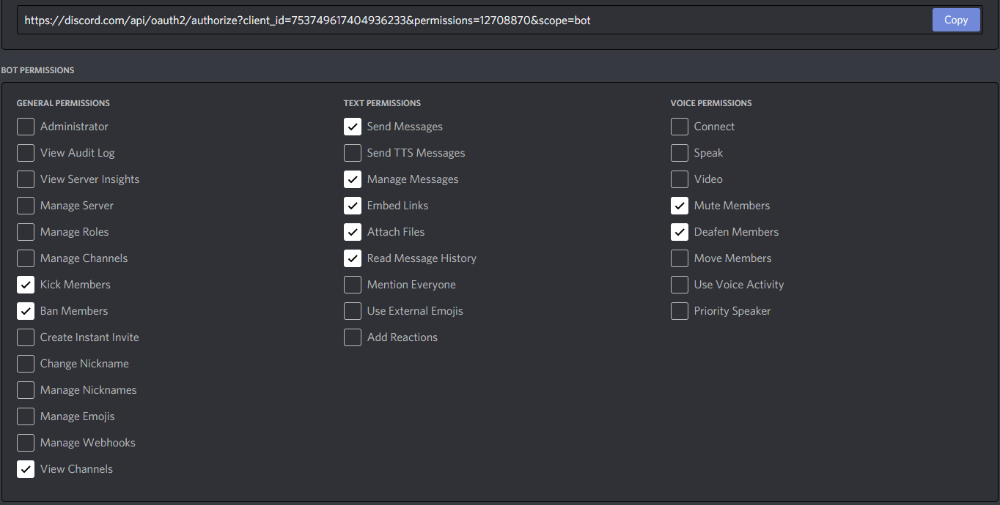
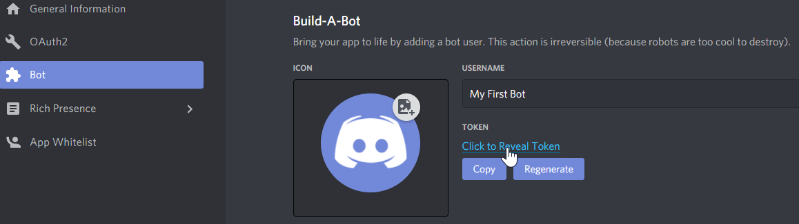

Creating a Bot Account
Create an Application
Before you're able to create a bot account to interact with the Discord API, you'll need to create a new OAuth2
application. Go to the Discord Developer Portal and click New Application at the top right of the page.

You'll then be prompted to enter a name for your application.

The name of your application will be the name displayed to users when they add your bot to their Discord server. With that in mind, it would be a good idea for your application name to match the desired name of your bot.
Enter your desired application name into the text box, then hit the Create button.
After you hit Create, you'll be taken to the application page for your newly created application.

That was easy, wasn't it?
Before you move on, you may want to upload an icon for your application and provide a short description of what your bot will do. As with the name of your application, the application icon and description will be displayed to users when adding your bot.
Add a Bot Account
Now that you have an application created, you'll be able to add a brand new bot account to it.
Head on over to the bot page of your application by clicking on Bot in the left panel. From there, click on the
Add Bot button at the top right of the page.

Then confirm the creation of the bot account.

Using Your Bot Account
Invite Your Bot
Now that you have a bot account, you'll probably want to invite it to a server!
A bot account joins a server through a special invite link that'll take users through the OAuth2 flow; you'll probably be familiar with this if you've ever added a public Discord bot to a server. To get the invite link for your bot, head on over to the OAuth2 page of your application.

We'll be using the *OAuth2 URL Generator* on this page. Simply tick `bot` under the *scopes* panel; your bot invite link will be generated directly below.

By default, the generated link will not grant any permissions to your bot when it joins a new server. If your bot requires specific permissions to function, you'd select them in the *bot permissions* panel.

The invite link in the scopes panel will update each time you change the permissions. Be sure to copy it again after any changes!
Get Bot Token
Instead of logging in to Discord with a username and password, bot accounts use a long string called a token to authenticate. You'll want to retrieve the token for your bot account so you can use it with DSharpPlus.
Head back to the bot page and click on Click to Reveal Token just above the Copy and Regenerate buttons to take a
peek at your token.

Go ahead and copy your bot token and save it somewhere. You'll be using it soon!
Important
Handle your bot token with care! Anyone who has your token will have access to your bot account. Be sure to store it in a secure location and never give it to anybody.
If you ever believe your token has been compromised, be sure to hit the Regenerate button (as seen above) to
invalidate your old token and get a brand new token.
Write Some Code
You've got a bot account set up and a token ready for use. Sounds like it's time for you to write your first bot!